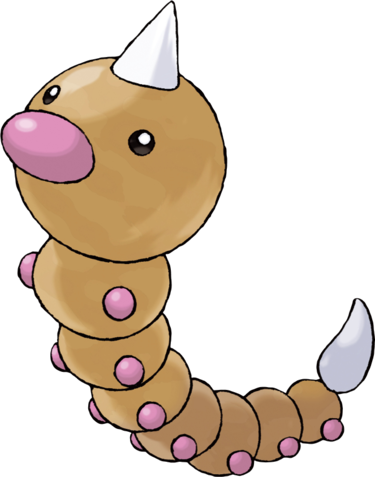

Aspicot est à moitié chenille et à moitié asticot. Sa tête est recouverte d'un aiguillon empoisonné qui fait sa dangereuse réputation. Contrairement à son « rival » Chenipan, il est muni de petits yeux noirs et de quatorze petites pattes rondes et violettes le long de son corps marron clair. Au bout de sa queue, il possède un autre aiguillon empoisonné qui lui sert beaucoup moins. Il n'a pas de bouche ni d'oreilles, mais a un gros nez violet de forme ovale.